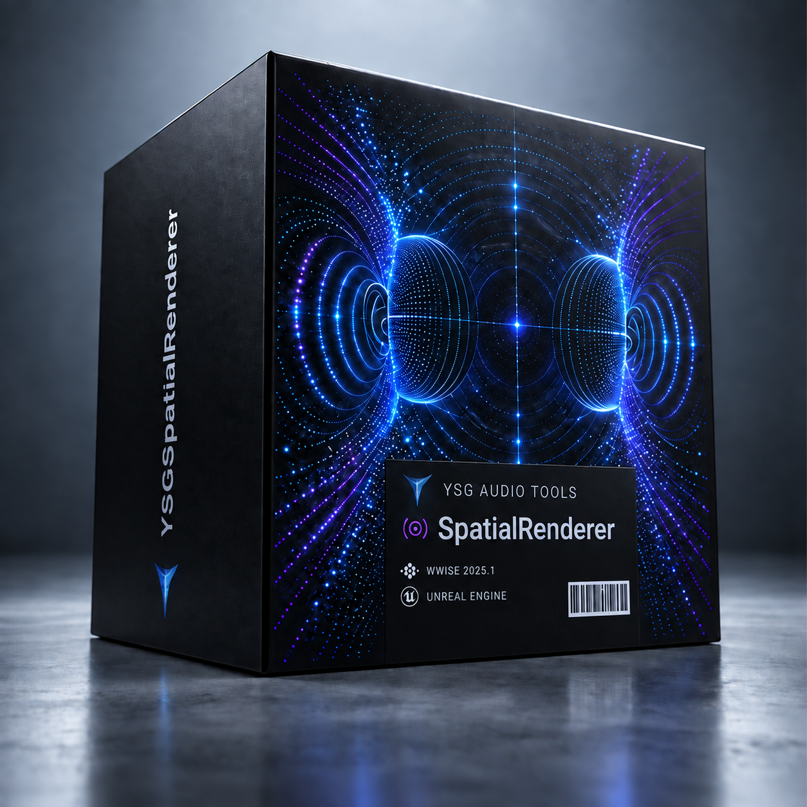

툴 모음
게임 사운드 디자이너를 위한
게임 사운드 디자이너를 위한
오디오 워크플로우 툴
게임 사운드 작업을 위해 만든 툴입니다. 소리를 찾고, 공간을 헤드폰으로 확인하고, 조용히 어긋난 설정을 잡아냅니다.
YSGSpatialRenderer
SoundField
Stereo Auditor
Bus Routing Auditor
Attenuation Auditor
툴 목록